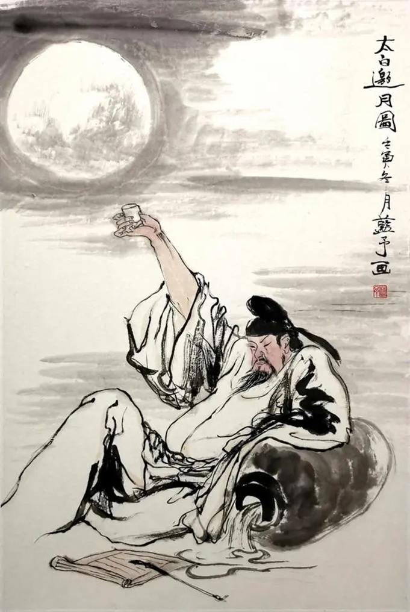

历史溯源
高抬戏剧目《太白邀月》取材于关于李太白的民间故事，说的是李太白的知己寥寥，难觅知音，无人可以诉说衷肠，浪漫的他觉得似乎只有空中的这一轮明月知他懂他。太白先生在月圆之夜席地独酌时常常会举杯邀月同饮，还吟诵出了“花间一壶酒，独酌无相亲。举杯邀明月，对影成三人”这一千古名句。
《太白邀月》这部高抬戏剧目，不仅是对唐代伟大诗人李白（世称李太白）深邃情感与超凡才情的艺术再现，更是对中国传统文化中“孤高自许，寄情山水”文人情怀的深刻诠释。高抬戏《太白邀月》精心编织了一个既贴近史实又充满浪漫幻想的故事框架，让观众穿越时空，亲临那个月光皎洁、思绪万缕的夜晚：李白身着飘逸长袍，手持酒杯，眉宇间透露着不羁与才情。此时的他，虽身为当世文豪，却深感知己难寻。而书童身着简朴，手持书卷与酒壶，默默服侍。那首脍炙人口的《月下独酌》穿越千年时光，再次在观众耳边回响：“花间一壶酒，独酌无相亲。举杯邀明月，对影成三人……”诗句中，李白将自己、明月与地上的影子融为一体，营造出一种超脱世俗、物我两忘的境界，让人不禁为之动容。
整个剧目通过精美的服饰、生动的表演、细腻的情感刻画以及富有诗意的设计，将李白“举杯邀月”这一经典场景生动再现，不仅展现了李白作为诗人的浪漫与才情，更深刻挖掘了他内心深处那份孤独与渴望被理解的复杂情感。观众在欣赏这场视觉与心灵的盛宴时，仿佛也能跟随李白的脚步，一同漫步在那片被月光轻抚的诗意世界之中。
演员及站位
高抬戏《太白邀月》以其独特的艺术魅力和深邃的文化底蕴，成为了中国传统戏曲中的一颗璀璨明珠。在这部戏中，李白与书童两位角色，以其鲜明的性格特征和细腻的情感，共同演绎了一段关于诗酒与月亮的传奇故事。
李白身姿挺拔，气宇轩昂，高居上方，站于中心位置，宛如一位超脱凡尘的仙人，俯瞰着人间的繁华与喧嚣。他的服饰飘逸而洒脱，每一针每一线都透露着匠人的心血与巧思，仿佛能够随风起舞，与天地同呼吸。李白的眼神深邃而明亮，仿佛能够洞察世间万物，又仿佛蕴含着无尽的诗意与激情。他手持酒杯，杯中酒液晶莹剔透，如同他心中的诗篇，纯净而美好。
在李白的下方，书童则以一种谦卑而恭敬的姿态站立。他身着朴素的衣裳，面容清秀，眼神中透露出对李白的敬仰与忠诚。书童的职责是服侍李白喝酒，为他拿酒、倒酒，确保这位伟大的诗人在酒意微醺中，能够尽情挥洒他的才华与情感。书童的动作轻盈而敏捷，每一次为李白斟酒，都仿佛是在为这场诗酒盛宴增添一份温馨与感动。他的站位虽然位于下方，但他的存在，却如同李白的影子，默默陪伴着他，共同经历了这场与月亮的浪漫邂逅。
李白与书童的站位设计，不仅巧妙地展现了两人之间的身份差异与情感联系，更通过高低错落的布局，营造出了一种独特的视觉美感与情感氛围。李白的居上，象征着他的超凡脱俗与高远志向；而书童的居下，则体现了他的谦卑与忠诚，以及对李白的深切关怀与敬仰。两人之间的这种默契与配合，让整个舞台场景充满了诗意与温情，也让观众在欣赏这场高抬戏时，能够感受到那份跨越时空的诗意与美好。
在《太白邀月》剧目中，李白与书童共同演绎了一段关于诗、酒、月亮与人生的传奇故事，他们的动作神态、站位设计，都成为了这场艺术盛宴中不可或缺的元素，让人为之陶醉，为之感动。
动作神态
高抬戏《太白邀月》中，李白与书童的动作神态细腻入微，将剧中人物的情感与性格特征展现得淋漓尽致，让人仿佛置身于那个诗意盎然的夜晚，与李白一同邀月共饮。
李白左手持酒杯，杯中酒液清澈如泉，映照着他深邃而明亮的眼眸。他的右手则高高举起，五指微张，作邀请状，仿佛正邀请那轮皎洁的明月共饮这杯中之物。李白的眼神中充满了对明月的深情与敬仰，他仿佛将明月看作了自己的知己，与之分享着内心的喜怒哀乐。他的身体随着内心的情感波动而轻轻摇曳，如同一位超脱凡尘的仙人，在月光下翩翩起舞，畅快自在，无拘无束。他的每一个动作、每一个眼神，都充满了诗意与激情，让人为之动容。
而在李白的身旁，书童则以一种截然不同的姿态站立。他身着朴素的衣裳，面容清秀，眼神中透露出对李白的敬仰与忠诚。书童的站位略低于李白，显得颇为忙碌与辛苦。他左手腋下横抱着一坛酒，那坛酒沉甸甸的，仿佛承载着他对李白的深深敬意与关怀。右手则高高地扛在肩上，也托着一坛酒，他的手臂因长时间的托举而微微颤抖，但眼神中却没有丝毫的抱怨与疲惫。书童的动作虽然辛苦，但他的脸上却洋溢着一种满足与幸福，仿佛能够为李白服务，是他最大的荣幸与快乐。
李白的飘逸与洒脱，书童的忙碌与忠诚，共同构成了一幅动人的画面，让人感受到了那份跨越时空的诗意与美好。在《太白邀月》的舞台上，李白与书童用他们的动作与神态，共同演绎了一段关于诗、酒、月亮与人生的传奇故事，让观众在欣赏这场艺术盛宴的同时，也能够感受到那份来自心底的温暖与感动。
妆面服饰
李白，头戴一顶精心编织的白色圆纱帽，这顶纱帽以细腻的纱质制成，轻轻覆盖在乌发之上，纱帽的边缘微微下垂，增添了几分飘逸与灵动，更映衬出李白那不染尘埃、超凡入圣的诗人形象。
而紧随李白身旁的书童，其装扮则展现出了截然不同的风格。他头戴一顶深邃的蓝色头巾，头巾的质地虽不如李白的纱帽那般轻盈，却也别有一番风味。
两人一上一下，李白的白色圆纱与书童的蓝色头巾交相辉映，构成了一幅动人心魄的画面。他们的装扮不仅是对角色身份与性格的准确诠释，更是对传统文化中“诗酒风流”、“师徒情深”等美好情感的生动展现，让观众在欣赏戏曲艺术的同时，也能深刻感受到中华文化的博大精深与独特魅力。
